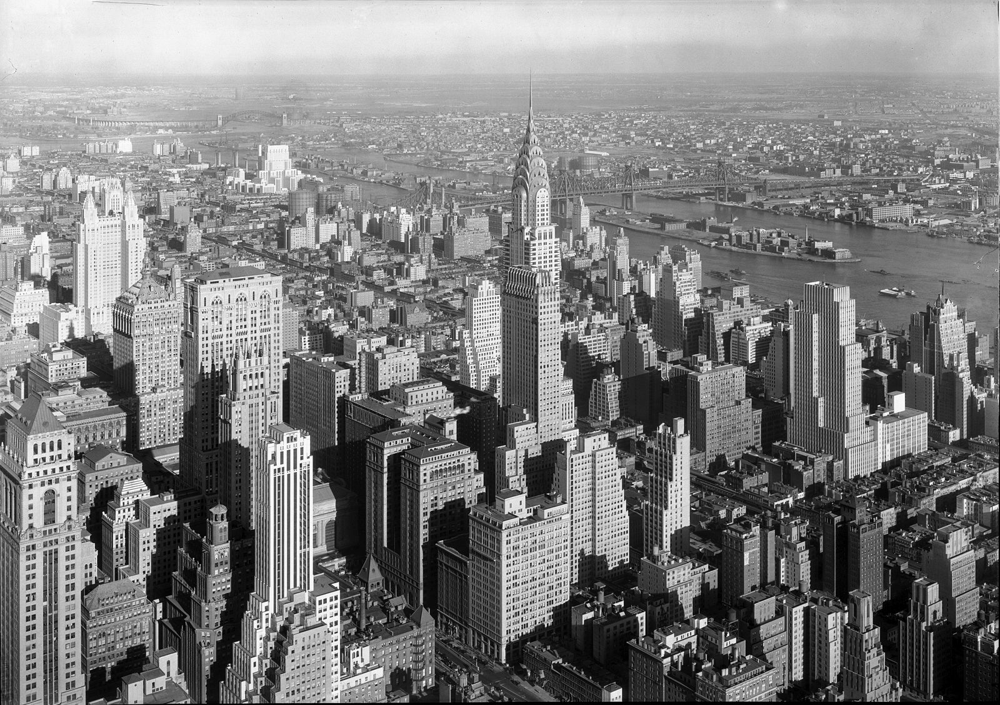

References / Architecture / 22
Chrysler Building, New York
William Van Alen’s skyscraper, completed in 1930: a setback tower capped by a stainless-steel crown of stacked, radiating arches and a needle spire.
- Source
- Library of Congress: Empire State Building, New York City. [View from], to Chrysler Bldg. and Queensboro Bridge
- Creator
- William Van Alen (architect)
- Made
- 1929–1930 (opened 27 May 1930)
- Style
- Art Deco (agent-proposed, not yet reviewed by a person)
- Moods
- Glamorous, optimistic, vertical
- Evidence
- Downloaded and inspected Samuel H. Gottscho’s photograph of 19 January 1932 from the Library of Congress via Wikimedia Commons (5359 × 3779 px, grayscale). The photograph is an aerial view from the Empire State Building, so the crown is legible but small; street-level ornament such as the eagle and hubcap details is not visible.
- Reviewed
- Rights
- Open license, stored. License: public domain. Rights policy

Context
Construction started on 21 January 1929, the spire was installed on 23 October 1929, and the building opened on 27 May 1930. It was the tallest building in the world for about 11 months. Wikipedia.
Wikipedia describes the crown as seven radiating terraced arches clad in Nirosta stainless steel, with triangular vaulted windows, and notes car-hood ornaments on the 31st floor and eagle gargoyles on the 61st. Wikipedia.
The Library of Congress dates the photograph 19 January 1932 and credits the Gottscho-Schleisner Collection (LC-DIG-ppmsca-05841). Library of Congress.
Observed
- The tower rises from the center of the frame above lower Midtown blocks; its outline steps in at several setbacks before the crown.
- The crown is a stack of diminishing arches, each pierced by a row of small triangular windows that fan out like rays.
- A thin needle spire continues the central axis above the arches.
- The crown reflects light more strongly than the brick shaft below it.
- Neighboring towers also step back in tiers; the photograph shows the setback silhouette as a citywide pattern.
- The photograph is black and white, so the color of the steel and brick is not recorded.
Why it belongs
The crown is the sunburst motif of the style built at city scale: nested arches radiate from one axis and diminish toward a point.
The tiered setbacks are the architectural source of the stepped frames and ziggurat outlines that appear in Deco graphics and furniture.
Borrow
Build a heading or hero ornament from nested arches that shrink toward one central point.
Step the outline of a frame or card inward in two or three tiers instead of rounding its corners.
Measured
Machine-extracted by tools/image-traits.py on . Full measurement.
- Mean chroma
- 0
- Palette
- #c6c6c6 10%
- #7e7e7e 9%
- #acacac 9%
- #444444 9%
- #232323 9%
- #a0a0a0 9%
- #646464 9%
- #ededed 7%

